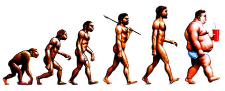

< < < Back
This Is Why Girls Go For Bad Boys – Return Of Kings
Like most people who have taken the red pill, I had already internalized some of the lessons that it gave before I found anyone else who shared the same ideas. Once I discovered the manosphere I went on a long binge of all of the red pill bloggers I could find and digested everything. There was not enough time to critically think about what any of them were saying because I was taking everything in too fast.
Now that it has been several months since I have taken the red pill I have had a chance to think about what I have read and come to some of my own conclusions from it. Some ideas I have embraced completely while others I have chosen to discard. One of the writers who I found very interesting was once mentioned on this site before: Bonecrcker.
One of his posts that was particularly interesting to me was one called Social Proofing has Negative Survival Value for Women. In this he explains money, looks, personality, and other indicators of a man’s value are less important to women than how many other women a man has had in the past. This is the idea of social value. A woman will be less interested in a tall, fit, and wealthy engineer who hasn’t dated much than she would be in an STD-ridden drug dealer who has pump and dumped hundreds of women before her.
Even with red pill wisdom this was something I simply could not swallow. It seemed far, far too illogical for my brain to wrap itself around so I dismissed him as a loser who must have done something wrong with his woman. This was a couple of months into my red pill awakening.
Then later I saw a youtube video by a MGTOW blogger named Stardusk that talked about maladaptation. The most obvious form of maladaptation is human’s ability to store large amounts of fat deposits whenever food is abundant so we can survive when it is not. For most of human history this was an extremely important and life saving biological adaptation. However, today this once life-saving evolutionary advantage has become disadvantageous to people who live in modern society. For more on this just look at any ROK post between October 7th through October 13th.

This is the most commonly understood form of maladaptation, but where this concept gets truly interesting is not in survival of the fittest evolution, but in sexual evolutionary psychology. This is where it can be explained why women prefer to go after bad boys over nice beta males.
Some Brief Historical Perspective
Before modern medicine came along some studies have shown that the chance of a woman dying in childbirth in the 17th and 18th centuries was 1-1.5%. Since women in that time had to have numerous children to account for the high infant mortality rates, it is suspected that around 1 in 8 women died of childbirth at some point in their lives. It is likely that thousands of years before this the chances of a woman surviving may have been even smaller.
Since women were risking their lives for the chance to pass on their DNA to future generations, they had to make sure they were getting the best chance possible. If a mother and a beta husband have a son who never has children of his own then as far as the parent’s DNA is concerned that son may as well have been stillborn. On the other hand, if her husband were an alpha who has an alpha son that impregnates all of the girls in the village, the mother’s DNA would be spread very well. Any granddaughters that her alpha son gave her will have the same strong desire for alpha characteristics that the original mother had.
Lets Test the Math
Lets take a hypothetical scenario of two women. Beta-loving Susan and alpha-loving Megan.
Susan marries a loyal beta male who provides enough for her to have three sons. Each of them gets married and have three children. Susan’s childbirth to grandchild ratio is 3:9 or 1:3. Three grandchildren per childbirth.
Megan marries a man who cheats on her and doesn’t provide as many resources to her so she can only have two sons. However, these two sons are just like their father and go out and have sex with many girls in the area and have five children each. Megan’s childbirth to grandchild ratio is 2:10 or 1:5. Therefore she gets a wider spreading of her DNA while not having to risk death in childbirth as much. Who is going to be favored by evolution more?
Megan, of course. 10 > 9. After hundreds of iterative generations almost all of the women in a community will share Megan’s love of men who sleep around a lot.
Therefore the best evolutionary strategy for women is not to have lots of sex like it is for a man, but to have sex with the man who is most successful at getting lots of women to have sex with him so she can have his son and make all of her friend’s daughters go through the childbirth instead.
So What Does This Mean For Us?
Obviously this is just a theory, but it is a theory that matches up with most of the data points. A man who acts needy is more likely a guy who doesn’t get laid much and may bear sons who also won’t be able to get girls. A guy who acts confident and aloof is signalling that he has the ability to get another girl if the one he is currently talking to doesn’t work out. This signal will attract the female because he is more likely to bear sons who will also be able to get girls (theoretically).
A woman will be attracted to an athlete or celebrity who gets lots of pussy because she hopes that those traits will be passed onto her son who will carry half of her DNA and spread her genetic code around. That is the evolutionary point of all life after all. A man who has sex with a fertile woman every day can have 270 children in a nine month period while a woman can only have one.
This epiphany helped to cement the red pill into my mind. Even in the blue pill world men understand that women do not behave logically. However, there are logical explanations for their illogical behaviors. In the case of bonecrcker’s example of a woman choosing a lecherous drug dealer over a stable and loyal man the woman’s actions can be understood. If the lecherous drug dealer can get lots of women without putting in much effort then the woman’s hindbrain, which is responsible for creating feelings of attraction, sees him as high grade DNA material for a son. The loyal hardworking man is seen as weak because he has to work harder for less pussy. He lacks the unexplainable animal magnetism that the drug dealer has from the point of view of the female hindbrain.
This is a perfect example of maladaptation. In 12000 B. C. a man would not be able to get lots of women unless he was the strongest in the tribe so a woman could accurately predict that a man who other women were going after would have superior DNA.
This is an important tool for spreading the red pill message into the blue pill world. It is very hard to tell a man what women are really like unless you can prove it with rock solid logic. Without it most blue pill manginas will dismiss your argument. In which case you can respond:
“Do you not understand that women had to actually risk their lives in childbirth thousands of years ago. Evolution has taken place over environmental stresses much more mild than that. The fact that you refuse to believe that women actually dying would cause a change in their evolutionary psychology just shows how little empathy you have for what women had to go through back then.”
Yes, you can use a mangina’s own tactics against them to force them to take the red pill.
Read More: How This Site Improved My Life


{kind=link}
{kind=link}